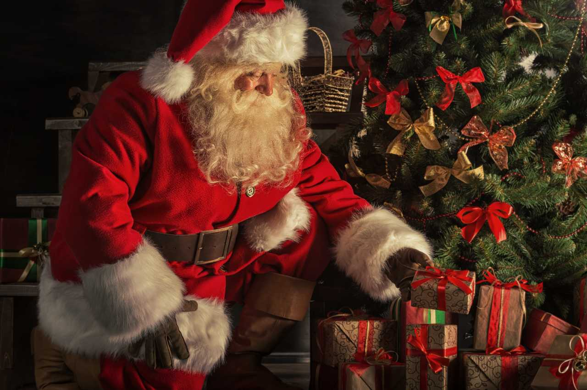
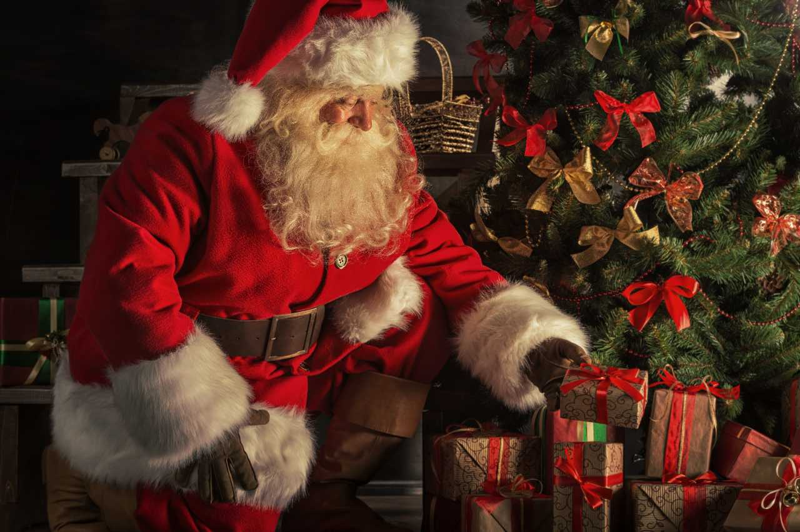

Historia świętego mikołaja ma swoje korzenie w postaci biskupa Mikołaja z Myry, który żył w IV wieku w Azji Mniejszej (dzisiejsza Turcja).
Mikołaj był znany z dobroci, hojności i licznych cudów, jakie przypisywano mu za życia. Według legend, pomagał ubogim, szczególnie dzieciom, i ratując ich od biedy, niejednokrotnie czynił to anonimowo.
Jedną z najsłynniejszych opowieści jest ta, w której Mikołaj wrzucał złote monety do okien ubogich rodzin, aby mogły one opłacić posag dla swoich córek.
Po śmierci biskupa, jego kult rozprzestrzenił się, a Mikołaj stał się patronem dzieci, żeglarzy i kupców. Z czasem, w tradycji europejskiej, jego postać przekształciła się w postać świętego mikołaja, który obdarowuje dzieci prezentami.
Współczesny obraz świętego mikołaja, który jest znany na całym świecie, rozwinął się głównie w XIX wieku, a popularność zawdzięcza m.in. amerykańskim tradycjom, które połączyły wizerunek Mikołaja z postacią jaskrawego, wesołego brodacza w czerwonym stroju.
Ukształtował go również obraz stworzony przez reklamy Coca-Coli z lat 30. XX wieku. Dziś Mikołaj jest symbolem świąt Bożego Narodzenia i obdarowywania bliskich.
 
